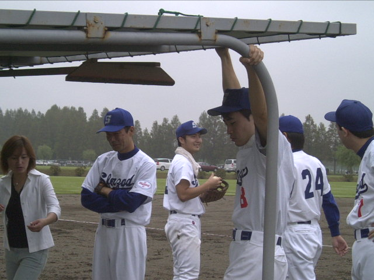

IPlanning
株式会社 アイプランニング
Towa Edogawabashi building 8F
Yamabuki-cho 347
Shinjuku-ku Tokyo
Phone: 03-5225-1147
アイプランニングの「Ｉ」は、イノベーションの「Ｉ」です。それは、経営をより労働集約化して、高付加価値的なソフトを開発できる集団へと自己革新をはかっていくシンボルマークでもあります。その成果は職場環境や給与の向上、そして労働時間の短縮や福利厚生の充実に当てられ、またスタッフの専門技術育成のファンドともなります。 こうした、社員一人一人を大切にする経営方針が、さまざまな分野のソフト開発を手がけることができた大きな理由の一つです。
「自由発想の規格外企業」として少数精鋭主義を貫くアイプランニングでは、より専門化した研究企画集団をめざしています。個性と人間性を重視し、入社時よりの研修は全てマンツーマン教育を実現してきました。また、ソフトの企画力を研究するための研修制度を導入し、特に通信、医療、電子機器、光学機器のジャンルに注目して、ソフトの企画・開発の特化をめざし、更なる飛躍をしていきます。
外食産業の大手「デニーズ」「ファミール」や「天狗」でおなじみのレストランオーダエントリーシステム。ハンディターミナルを押すだけで、瞬時に厨房と会計、遠方の本部にオーダを転送するこのシステムを開発したのがアイプランニングです。開発だけでなく、プランニングとアドバイス、コンサルティングという人と人との関係を大切にし、また、「個々の能力を重視し、個性がもっとも大きな資本だと考える」社風が、オリジナリティあふれるソフトの開発に結びつきました。こうした「企画力」は、独立企業としてダイレクトにセイコーインスツルやニコン、ソニー、野村総合研究所などの大手との取引に生かされています。
「自由発想の規格外企業」として少数精鋭主義を貫くアイプランニングでは、より専門化した研究企画集団をめざしています。個性と人間性を重視し、入社時よりの研修は全てマンツーマン教育を実現してきました。また、ソフトの企画力を研究するための研修制度を導入し、特に通信、医療、電子機器、光学機器のジャンルに注目して、ソフトの企画・開発の特化をめざし、更なる飛躍をしていきます。
外食産業の大手「デニーズ」「ファミール」や「天狗」でおなじみのレストランオーダエントリーシステム。ハンディターミナルを押すだけで、瞬時に厨房と会計、遠方の本部にオーダを転送するこのシステムを開発したのがアイプランニングです。開発だけでなく、プランニングとアドバイス、コンサルティングという人と人との関係を大切にし、また、「個々の能力を重視し、個性がもっとも大きな資本だと考える」社風が、オリジナリティあふれるソフトの開発に結びつきました。こうした「企画力」は、独立企業としてダイレクトにセイコーインスツルやニコン、ソニー、野村総合研究所などの大手との取引に生かされています。
あなたの身近にあるアイプランニングの技術
 外食産業の大手「デニーズ」「ファミール」や「天狗」でおなじみのレストランオーダエントリーシステム。
外食産業の大手「デニーズ」「ファミール」や「天狗」でおなじみのレストランオーダエントリーシステム。ハンディターミナルを操作するだけで、瞬時に調理場と会計に伝票（オーダ）を転送するこのシステムのソフトウエア部分を企画・設計および開発したのが我々アイプランニングです。このシステムは現在あらゆる業界・業務全般を管理するトータルシステムとして継続発展中です。
新旧技術の混在する調和の取れたソフトハウス
アイプランニングには、一個人で、10年勉強しても決して追いつくことのできない技術や情報があります。最近の技術革新はあっという間です。半年もすぎれば、古い技術になってしまいます。最新の技術と情報の管理を仕事としている人達がここにいます。
ＩＴ全盛の現代において、「最新のもの」≒「良いもの」という風潮のなかであっても古い技術と言われているものの中から、それが最適であれば、かっこつけずに使用します。
セミプロとプロの差は、情報量ではなく、情報をいかに使いこなすかなのです。
セミプロとプロの差は、情報量ではなく、情報をいかに使いこなすかなのです。
年齢や役職に関係なく、すべての社員が現役プログラマです。経験や知識が風化しない、衰えない。だから新旧技術の一体開発が可能なのです。氾濫寸前な膨大な新旧の技術や情報の海の中から良いものだけを釣り上げ、最高のスパイスと腕とで料理し、お客様に最高の一品を提供いたします。
活気にみなぎるアイプランニングの開発現場風景
明るく楽しいながらも、厳しさと迅速さを兼ね備えた開発現場では、プロジェクト単位の責任者(プロジェクトリーダ)がアグレッシブに意見交換を行い、仕様の取りまとめは、もちろん具体的な行動プランを示しながら、一人一人の能力を最大限に活かしシステム開発を行っています。
最近では、協力会社からも多くの人材が集まり、マンネリしがちな業務が常にフレッシュな状態を保てるようになってきました。個々のリーダとしてのマネジメントを学ぶ機会にも恵まれ、IT技術のみならず社会人として魅力ある社員が増えてきました。
最近では、協力会社からも多くの人材が集まり、マンネリしがちな業務が常にフレッシュな状態を保てるようになってきました。個々のリーダとしてのマネジメントを学ぶ機会にも恵まれ、IT技術のみならず社会人として魅力ある社員が増えてきました。
効率的な作業で残業がほとんどありません。
残業して当たり前というSE、プログラマの常識を、アイプランニングでは真っ向から否定しています。実際、１人の月平均残業時間が１時間程度なんです。残業が少ない理由は、社員それぞれがお客様や開発メンバーと、こまめに意見交換をし、各自の計画に基づいて確実に業務を実行しているからなのです。「残業をしているから働いている」でなく、「時間内に仕事が終わらないのは恥」と捉える空気もあります。ですから、社員は就業時間内に結果を残すために精一杯働きます。
そして余った時間は家族とゆっくり過ごしたり、趣味や勉強、サークル活動の時間にと、あなたなりの有意義な時間でリフレッシュしてください。もちろん、残業時間が少なくても、働きと成果に応じた高水準の報酬が用意されています。こんな基盤が社員の隅々まで浸透しているソフトハウスは、アイプランニングくらいなのではないでしょうか？
就業時間制度として、フレックスタイム制(コアタイム10:30〜15:30)を導入しております。月間の総就業時間を社員個人のスケジュール管理によって割り振る事ができるシステムです。この制度により、付き合い残業などの無駄な時間を、自らの意思で排除する事ができるんです。月初めが忙しく月末が比較的暇であるような場合は、月初でやむを得ずたまってしまった残業時間を、月末にむけてフレックスタイム制を使って消費することが可能となっているのです。
一緒に働くプログラマを募集しています。(未経験者もOK)
■第一は「人物重視」
お客さまの立場に立ってモノが作れる判断力、企画力、コンサルティング能力を磨きたくはありませんか？プログラム能力は、プロジェクトを通じて自然と能力があがるようなシステムになっています。初心者プログラマであっても３年程度で、その能力は初心者だったとは思えないくらいのスキルとなっています。
これは、「最初は誰でも初心者だ」という教育方針があるため、また、多くの社員が入社して初めてプログラミングにふれたという経験があるために自分のつまづき体験や、成功体験を含めた教育がなされているからなのです。
このようにアイプランニングでは、社員１人ひとりの個性と人間性を重視し、スキルにあったマンツーマン教育であなたを一人前のエンジニアへと成長させていきます。 それは誠実なスタッフが集まっているからこそ、どんなお客様からも信頼される企業に成長できるから。私たちはそう考えています。
お客さまの立場に立ってモノが作れる判断力、企画力、コンサルティング能力を磨きたくはありませんか？プログラム能力は、プロジェクトを通じて自然と能力があがるようなシステムになっています。初心者プログラマであっても３年程度で、その能力は初心者だったとは思えないくらいのスキルとなっています。
これは、「最初は誰でも初心者だ」という教育方針があるため、また、多くの社員が入社して初めてプログラミングにふれたという経験があるために自分のつまづき体験や、成功体験を含めた教育がなされているからなのです。
このようにアイプランニングでは、社員１人ひとりの個性と人間性を重視し、スキルにあったマンツーマン教育であなたを一人前のエンジニアへと成長させていきます。 それは誠実なスタッフが集まっているからこそ、どんなお客様からも信頼される企業に成長できるから。私たちはそう考えています。
■応募者へのメッセージ
プログラマを目指して会社に入ったものの、思った通りの仕事をさせてもらえなかったと思っている人、教育システムが十分でなかったためにスキルが身に付いていないと思っている人も気軽にご応募ください。パソコンのスキルに自信のない方でも、マンツーマンの研修制度で一人前に成長できるフィールドを整えておりますので安心してご応募くださいね。
知識だけでなく本当の開発力が身につく環境でのシステム開発でみつかる『やりがい』はもちろん、プライベートでも今までになかった充実感が得られますよ。
※2014年度の新卒募集の予定はありません。
⇒応募要項はこちら
プログラマを目指して会社に入ったものの、思った通りの仕事をさせてもらえなかったと思っている人、教育システムが十分でなかったためにスキルが身に付いていないと思っている人も気軽にご応募ください。パソコンのスキルに自信のない方でも、マンツーマンの研修制度で一人前に成長できるフィールドを整えておりますので安心してご応募くださいね。
知識だけでなく本当の開発力が身につく環境でのシステム開発でみつかる『やりがい』はもちろん、プライベートでも今までになかった充実感が得られますよ。
※2014年度の新卒募集の予定はありません。
⇒応募要項はこちら
サークル活動で心身共にリフレッシュ
 アイプランニングは、IT業界では、あまり例をみない残業時間や休日出勤の少なさから、多くの社員が趣味やサークル活動を行っています。パソコンの前に１日中座っている事が多いプログラム開発で、たまったストレスや運動不足を、野球、バドミントン、卓球、ボウリングなど通じて心身共にリフレッシュしています。最近では、会社としてのサークル活動の域を越え、地域密着型のサークルに発展しているサークルもあります。
アイプランニングは、IT業界では、あまり例をみない残業時間や休日出勤の少なさから、多くの社員が趣味やサークル活動を行っています。パソコンの前に１日中座っている事が多いプログラム開発で、たまったストレスや運動不足を、野球、バドミントン、卓球、ボウリングなど通じて心身共にリフレッシュしています。最近では、会社としてのサークル活動の域を越え、地域密着型のサークルに発展しているサークルもあります。システム開発だけでなく、サークル活動を通じても、社会貢献ができてきている姿は、２１世紀の会社の一つのありかたであると自負しております。
手に職を！スキルアップ教育
アイプランニングは、特別な教育時間があるわけではありません。これは、現場で培った技術こそが本物のスキルであるという考えに基づいたものです。確かに、外部のセミナーや参考書、資格試験から得られる知識はとても有益なものです。これを能力の判断基準とすることは一定の成果をあげることでしょう。しかしながら、「理論ばかりの頭でっかちな技術者」が実際に開発の現場で活躍出来るかどうか・・・疑問に思っております。
「外部から得た知識をプロジェクトの現場で活かせなくては、力とはいえない。」アイプランニングではこのような風潮さえあります。このような環境である為に、プロジェクトのリーダは、最新のIT技術を自ら取得し、実際に仕事に使えるレベルまで高め、そのスキルを開発メンバーに惜しみなく提供し、知識と開発力を併せ持ったチームを形成するようになっております。
誰かにやれといわれたものではなく、自発的に技術を習得し、活用していく事から、モチベーションも高く保ちながら自然とスキルが向上する理想の環境が出来上がっています。新人の早期プロジェクト投入や社内セミナーの開催など常に業務に追われるだけでなく、先を見据えた行動も実践しております。年齢や組織の枠を越えた社員の交流が盛んなこともあり、「わからない事は知っている人に聞く」という風潮があることも手伝って迅速で確実なスキルアップを実現しています。
「外部から得た知識をプロジェクトの現場で活かせなくては、力とはいえない。」アイプランニングではこのような風潮さえあります。このような環境である為に、プロジェクトのリーダは、最新のIT技術を自ら取得し、実際に仕事に使えるレベルまで高め、そのスキルを開発メンバーに惜しみなく提供し、知識と開発力を併せ持ったチームを形成するようになっております。
誰かにやれといわれたものではなく、自発的に技術を習得し、活用していく事から、モチベーションも高く保ちながら自然とスキルが向上する理想の環境が出来上がっています。新人の早期プロジェクト投入や社内セミナーの開催など常に業務に追われるだけでなく、先を見据えた行動も実践しております。年齢や組織の枠を越えた社員の交流が盛んなこともあり、「わからない事は知っている人に聞く」という風潮があることも手伝って迅速で確実なスキルアップを実現しています。
専門分野に特化した３つ開発グループ
 |
■エンジニアリングアプリケーションGroup Web・科学技術計算系・ロボット制御 |
 |
■システムソリューションGroup 制御・ネットワーク系オープンシステム |
 |
■イノベーションテクノロジーGroup 科学技術計算系・医療システム |
アイプランニングのソフトウエア開発
お客様がシステム化したい事とは何か？お客様がシステム化したい理由とは何か？システム化によってもたらされるものとは何か？を担当者とのこまめなヒアリングを通じて最短で洗い出します。また、業務の流れや、運用面の改良が、最もお客様にとって利益をあげるものと考えており、システム化してしまったばかりに、本来あるべき姿への改善、改良を行うきっかけを見落とすことのないようにお客様に配慮したシステム作りを目指しています。
システム化『したいこと』の中に含まれる人の手では『やりたくない』ことを見つけ出し、まだ、お客様自身が気付いていない重要なシステム要件を見逃さないことで仕様検討に関わるお時間を最短なものにしていきます。このようにお客様と相談しながらの開発を可能にしていることが、システム化にもっとも効果をあげています。
不具合(バグ)に対する徹底した迅速対応
不具合の多くはコミュニケーション不足による仕様違いによるものです。アイプランニングでは、バグ発生の規模に応じて、人材投入をグループの垣根を越えて、社員総動員でバグに立ち向かう事さえあります。迅速な対応を行っているとはいえ、お客様にはご迷惑をおかけしてしまう事に変わりありません。このような事が出来るだけ発生しないようにと、不具合が発生してしまったプロセスや原因を特定し、同じミスが発生しないように社員一丸となって企業努力に努めております。
特別なシステム開発の営業活動は行っておりません。
アイプランニングでは、特別な新規システム開発の営業活動は行っておりません。正直なところ、営業活動にまで手が回せていないのが現状です。
多くのシステム開発の案件は、お客様を通じて口コミでいただく事がほとんどなのです。良い仕事をして、それが認められ信頼を得た結果ではないかと感じております。
本来であれば、より良いシステムを多くの企業様にご提案したいところではありますが少数精鋭型の経営である現在のアイプランニングでは、このスタイルが最も適しているのです。
もちろん今後は社員数を拡張し、より多くのお客様とお仕事を通じて社会貢献できればと思っております。
今回、幸いにも、星の数ほどあるソフトハウスの中で、我々アイプランニングに興味を示していだだき、新規にシステム開発のご相談をお問い合わせいただく事に関しまして、何か特別な審査があるわけではございませんので、開発に関する概要、質問だけでも結構ですので、直接のお電話(03-5225-1147)もしくは、下記より連絡をいただければ幸いです。 ⇒開発依頼・お見積もりはこちら
多くのシステム開発の案件は、お客様を通じて口コミでいただく事がほとんどなのです。良い仕事をして、それが認められ信頼を得た結果ではないかと感じております。
本来であれば、より良いシステムを多くの企業様にご提案したいところではありますが少数精鋭型の経営である現在のアイプランニングでは、このスタイルが最も適しているのです。
もちろん今後は社員数を拡張し、より多くのお客様とお仕事を通じて社会貢献できればと思っております。
今回、幸いにも、星の数ほどあるソフトハウスの中で、我々アイプランニングに興味を示していだだき、新規にシステム開発のご相談をお問い合わせいただく事に関しまして、何か特別な審査があるわけではございませんので、開発に関する概要、質問だけでも結構ですので、直接のお電話(03-5225-1147)もしくは、下記より連絡をいただければ幸いです。 ⇒開発依頼・お見積もりはこちら
業績、利益を上げることに真剣であり
常識にふりまわされる事のない
改革、革新を求めるお客様からの
連絡をお待ちしております。
常識にふりまわされる事のない
改革、革新を求めるお客様からの
連絡をお待ちしております。
代表取締役
石曽根 良
石曽根 良
最近の開発実績
・ハンディターミナルを使ったオーダー
エントリーシステム開発
・医療系（歯科系）の内部システム開発
・レンズ設計の図面管理（DB）システム
開発
・光学技術を使った半導体製造装置の
システム開発
・制御系システム
[詳細はこちら]
IPL インフォメーション
2012/10/19
社員の声に新しい声が加わりました。
[詳細]
2012/10/05
サークル活動にママチャリ部を追加しました。[詳細]
2012/09/08-10
創立２５周年の社員旅行は沖縄(石垣島)へと２泊３日で行ってきました。
2009/12/28
Google App Engine/Javaで簡易Blogを追加しました。[詳細]
2009/12/28
Google App Engine/Javaデータストアの特徴を追加しました。[詳細]
ソフトウエア開発ポリシー
- お客様にとって本当に必要なシステムの姿を見極める
- エンドユーザが使い易い、より良いインタフェースを常に模索し提案する
- 知識と開発力を併せ持った開発チームを形成し、システム開発に取り組む
- こまめに意見交換をし、問題点、疑問点を早期に解決する
- システム開発を軸として一人一人が社会貢献を意識する
- 仏の心をもちながら、作業する手は鬼の如く迅速に行う
- 自分自身で開発目標を見つけ、時間を有効に使う
開発ターゲットプラットフォーム
- PC
- ワークステーション
- 特殊機器(組み込みなど)
主な開発ターゲットOS
- Windows XP/2003
- Windows NT/2000
- Windows CE
- Linux
- Unix
- MS-DOS
主な開発ターゲットPG言語
- Visual C++/.NET
- Java
- C++
- Fortran
- High C
- PHP/Perl
主な開発ターゲットDB
- Oracle
- SQLServer
- DB2
- MySQL
最寄りは有楽町線江戸川橋駅
■地下鉄有楽町線
池袋 → ６分 → 江戸川橋駅
有楽町 → 12分 → 江戸川橋駅
江戸川橋駅下車 徒歩３分
池袋 → ６分 → 江戸川橋駅
有楽町 → 12分 → 江戸川橋駅
江戸川橋駅下車 徒歩３分
■地下鉄東西線
中野 → 11分 → 神楽坂駅
大手町 → 11分 → 神楽坂駅
神楽坂駅下車 徒歩１０分
中野 → 11分 → 神楽坂駅
大手町 → 11分 → 神楽坂駅
神楽坂駅下車 徒歩１０分

イノベーションとは？
アイプランニングの『 I 』はイノベーションの『 I 』。
「イノベーション」という言葉は、経営の神様と呼ばれるＰ・Ｆ・ドラッカー氏によって、重要性が提唱された多様化する現代になくてはならない「最重要キーワード」です。
辞書的な意味では「革新・刷新」や「創造的破壊」とありますが、「時代や環境によって求められる姿に変わること、最適化する事」と解釈しております。
アイプランニングでは、名誉や技能、昔評価されたこと、学歴、会社名などに固執することなく、今あるべき姿を常に追い求め、社会への最適化を測ることを宣言するために、イノベーションが声高に叫ばれはじめた現代より２０年も前から、会社のシンボルとして掲げ続けております。
「イノベーション」という言葉は、経営の神様と呼ばれるＰ・Ｆ・ドラッカー氏によって、重要性が提唱された多様化する現代になくてはならない「最重要キーワード」です。
辞書的な意味では「革新・刷新」や「創造的破壊」とありますが、「時代や環境によって求められる姿に変わること、最適化する事」と解釈しております。
アイプランニングでは、名誉や技能、昔評価されたこと、学歴、会社名などに固執することなく、今あるべき姿を常に追い求め、社会への最適化を測ることを宣言するために、イノベーションが声高に叫ばれはじめた現代より２０年も前から、会社のシンボルとして掲げ続けております。
毎年９月に実施される社員旅行

2012年の社員旅行は沖縄県(石垣島)への２泊３日の旅行へ行ってまいりました。
アイプランニングの強みとは？
大企業とも、担当者レベルで直接取引できる営業力、開発力が最大の強み。
これは、社員一人一人が、自ら技術を磨こうと考え、その場での最適な行動を選び実践する社風が大きく影響をしています。単にプログラムを開発するだけのロボット型の人間ではなくお客様の立場に立って、一緒により良いものを作っていこうとする気配りの出来る人間が我々アイプランニングには揃っております。人間的に魅力ある社員が多数いる事が、アイプランニングの一番の資産、宝であり強みとなっております。
これは、社員一人一人が、自ら技術を磨こうと考え、その場での最適な行動を選び実践する社風が大きく影響をしています。単にプログラムを開発するだけのロボット型の人間ではなくお客様の立場に立って、一緒により良いものを作っていこうとする気配りの出来る人間が我々アイプランニングには揃っております。人間的に魅力ある社員が多数いる事が、アイプランニングの一番の資産、宝であり強みとなっております。
アイプランニングの弱みとは？
正直に、欠点を申しますと、会社の規模が小さいということです。
資本金、従業員数など決して多いとは言えません。これは、規模を重視せず、無借金、堅実な経営をモットーにしてきた為です。しかし、小さいからこそお客様個々に、ご要望以上のサービスを提供できているのだなと経験的に気付かされました。
毎年秋に行われる野球大会風景

老若男女を問わずハッスルプレーの連発。そして・・・なぜか爆笑の渦？今年こそ優勝を！そして夢の舞台へ・・・
交流を深める機会が豊富
人と人とのコミュニケーションがスムーズにできる事こそが迅速なシステム開発における重要な意味を持つものと考えております。アイプランニングでは、このような考えの下に、社員同士が交流する機会を社員旅行も含め大切なものとして位置付けております。